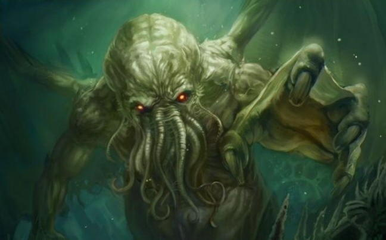

«В своём доме в Р’льехе мёртвый Ктулху спит и видит сны», — так звучит перевод ритуального напева, что непрестанно произносят служители культа властителя миров. И эскимосскиекие шаманы, и жрецы луизианских болот знают, что настанет час, когда звёзды подадут свой тайный сигнал и спящий на дне океана под сводами древнего циклопического города воззовёт. Тогда они вызволят Ктулху из его гробницы, и великий жрец, как и прежде, в незапамятные времена, вновь примет планету в свое владение.
Явившийся на Землю с далеких звезд, Ктулху не состоит из плоти крови. Он - существо иного измерения, чью природу человеческие чувства не способны постичь. Своим размером Ктулху подобен горе, и вид его отличает ужасающая осьминожья голова с извивающимися щупальцами да мощные когтистые лапы и длинные узкие крылья за спиной.
Могучей зеленой громадой он дремлет во Р’льехе, скрытом на дне Тихого океана, где очутился после того, как звезды изменили свое положение и его властвованию наступил конец. Перед тем он успел лишь оставить свое потомство — расу осьминогоподобных существ, также состоящих из неизвестной материи и способных к множественным трансформациям; они враждовали с прочими расами, жившими на Земле, но погибли вследствие природных катаклизмов.
С тех пор великий Ктулху спит мертвым сном, но смерть в привычном нам понимании ему неизвестна. Потому он издает со дна свой непостижимый зов, достигающий его тайных приверженцев и способный свести человека с ума. Однажды великий жрец воспрянет, и людской род, быстротечная песчинка в масштабе космоса, обезумев и позабыв о всякой морали, сгинет в необузданном экстазе самоуничтожения.
Впервые появились в рассказе «Зов Ктулху» (The Call of Cthulhu, 1926), упоминается во многих последующих произведениях и становится‚ известнейшим божеством пантеона.
В романе «Хребты безумия» (At the Mountains of Madness, 1931) Г. Ф. Лавкрафт указывает на существование потомков Ктулху, но не раскрывает их достаточно подробно.
